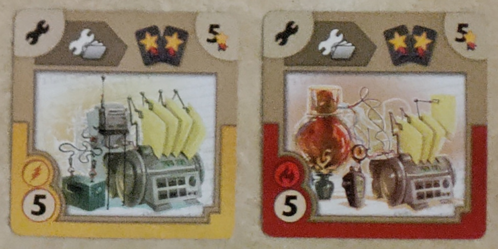

An unnecessarily deep dive into the board game Gizmos
2024-12-31Gizmos is a nifty engine building game themed around collecting a bunch of little gadgets that work together. I would guess about 0.2% of the people reading this wonder about questions like "what's the maximum theoretically possible score?" or "what's the fastest theoretically possible game?" To those 0.2% of people... I'm so glad you asked!
the rules
I'll briefly summarize the rules, but I don't think it's realistic for me to make this blog post understandable without prior knowledge of the game. If you want, you can find the rulebook and the list of gizmo effects on the official website.
Each player has a collection of gizmos in front of them. You start with only one, but you accumulate more throughout the game. Each player also has a collection of marbles, which are the resource used to pay for gizmos. On your turn, you can do one of four things:
-
Pick: Take one of the six marbles available from the marble dispenser (revealing a new one).
-
File: Reserve a gizmo from the communal board for yourself, so that nobody else can take it.
-
Build: Add a gizmo to your collection (either one from the communal board or one you filed earlier) by paying its marble cost.
-
Research: Look through the top few face down gizmos of one of the draw piles, and choose one to either build or file.
Every gizmo has a different effect. There are five kinds of gizmos:
-
Upgrades: For example, "increase your maximum marble capacity by 4".
-
Converters: For example, "you may use a red marble as any color marble (once per turn)".
-
File triggers: For example, "whenever you file, obtain a random marble".
-
Pick triggers: For example, "whenever you pick a red or blue marble, obtain a random marble".
-
Build triggers: For example, "whenever you build a blue card, pick one marble".
Gizmos can trigger off of each other -- for example, a build trigger can cause you to pick, which can activate a pick trigger. The action economy from these "chain reactions" are the primary idea behind the game's engine building.
the cards
For reference, here are all the cards in the game, sorted by function. (Click the images to open them in full size.)
{kind=link}
{kind=link}
{kind=link}
One observation you can make here is that while the deck very clearly exhibits a systematic structure, very little of it is uniform. In other words, there's no cross-deck motifs, like the color wheel in Splendor, for example. As I was arranging the cards for these pictures, I was kind of hoping I would discover something like that, because it adds a cool strategic element of planning ahead in your color choices. But it's not a big deal.
Also, there is still some strategic advantage you can gain via knowledge of the deck. For instance, the same-color combinations of the tier 2 converters (C → CC together with C→X, C→X) are very strong, since they allow you to turn one C into two of anything. So if you already have one of the red-doubling cards, for example, you can bias towards yellow in otherwise symmetric situations in the hopes that you can find the double red→X card. More concretely, the tier 3s are quite asymmetric, so you might want to know e.g. that the only 8 point cards are black and yellow (if you absolutely need 8 points on the last turn to win), or that the color with the most 4-cost early game utility is yellow.
my thoughts on the game
It's pretty good! Overall, it's definitely at least in my top ~30% or so of board games, with the caveat that it has relatively less staying power than most games of that quality. In other words, I'd rather play one game of Gizmos than one game of Splendor, but I'd rather play 10 games of Splendor than 10 games of Gizmos.
Why is this? I think it's largely a game design thing. In my experience, the dominant strategy of Gizmos is extremely centralizing: get as many tier 1 and tier 2 build→pick and pick→random triggers as you can, as fast as you can, and then build a card every turn. I've found that in the majority of games, I build something like my ~8th-16th cards on consecutive turns without ever stopping. If anyone in the game is doing this, it is very hard to do anything better, since they are both generating a baseline of 2-3 points a turn and rushing the game end condition, and anything faster than 2-3 points a turn takes way longer than that to reliably set up and ramp.
Also, this makes research really good, because it lets you either find the crucial combo pieces for your engine, or just find "any red or yellow tier 2" once your engine is going and you don't care about what the card says anymore. This isn't fundamentally a problem, I guess, it just feels a little silly that it's so disproportionately overpowered. I would certainly believe that several of my games have had "research" as well over half my turns.
One thing I find a little disappointing is that there is clearly a very intentionally designed "filing engine", i.e. set of cards designed for exploiting file synergies. This includes the file triggers, the "build-from-file" triggers, and a bunch of tier 3s that have file on them. The problem is that this build is basically always really bad. The core issue is that filing is ridiculously slow -- you have to spend a turn putting a card in your file, and then another turn building it out of your file. This cuts your rate of building cards in half, and the file synergies are not nearly strong enough to come close to matching the output of the standard build/pick engine. I occasionally build a file card when it happens to be convenient, but never as part of a real engine, and I mostly view them as dead weight.
balance mods
To counter some of these perceived hitches in game design, my friends and I often play with some arbitrarily chosen subset of these house rules:
-
Subtract 2 from every VP number on every card. (So everyone starts with -2 points from their starting card, and one-cost cards are now worth -1 points.) This makes buying cards as fast as possible less OP.
-
You must pay 1 marble of any color to research. This nerfs research, of course.
-
Rainbow cards must be built with 7 of the same color. (The rules say you can build them with any 7 marbles of any colors, which makes them way too easy to build. I don't remember if we said they still trigger all build triggers or just the color you built them with, but either way seems reasonable.)
-
Remove the game-end condition of "someone builds four tier 3 cards". I feel like this one is mostly just because it's annoying to remember, but that rule also punishes engines that are based on a few powerful cards instead of many weak cards, and those kinds of engines are the more interesting kind IMO.
-
Here's a really wacky one: Instead of laying out the cards as normal, shuffle all the tiers together and make a 13-sided polygon consisting of 12 random cards and the deck. Every turn, regardless of whether you took a card or not, the deck moves one space clockwise, "eating" the oldest card, and the top card is flipped over onto where the deck used to be. To file or build a card in the newest half (any of the 6 cards counterclockwise from the deck), you have to pay an extra marble of any color.
The idea behind this setup (other than that it's just weird and fun) is that some cards are simply better than other cards. It's kind of like Century Spice, which has a similar mechanic.
(We also have a few house rules that don't pertain to balance. For example, the base game says to remove 20 of the tier 3s randomly before each game, but this makes literally no difference at all if you don't dig 16 cards deep into the tier 3 pile, and the effect usually isn't that meaningful or at least obviously desirable anyway, so why bother.)
what's the maximum possible score?
Alright, now let's get to the good part of the blog post, as promised!
I'll use the base game rules for all of these questions, without any of our balance mods. Naturally, the tier 3 cards are the highest scoring, but the base game ends when anyone builds their fourth tier 3 card. So which four are the most efficient?
The answer is far and away these ones and it's not even close:

The first two say that whenever you build out of your file, you get two VP tokens (each worth 1 point). That's great, because we can file every single card first before building it, for a total of 58 points over the course of the game. Then the next two say, "this card is worth a number of points equal to how many VP tokens you have". So that triples the value of each VP token. These four cards alone are worth 58 + 5 + 5 + 58 + 58 = 184 points!
The other game-end condition is when anyone builds their sixteenth card, so we have eleven tier 1 and 2 cards to work with (you start with a tier 0). Eight of them say VP on them:
What's the right order to build these in? Notice how the colors form a "cycle": in the tier 1 image, from top to bottom, the color of one card is the trigger of the next, wrapping around at the end. So to maximize your points, you want to build them from bottom to top, so that each build activates the trigger from the previous build. The tier 2s are a bit subtler, but again the best order is bottom to top. Actually, you don't have to start at the bottom for either of these -- since the pattern is cyclic, you can start anywhere and wrap around.
Wait, but what about the interaction between the tier 2s and the tier 1s? Presumably it's better to build the 2s before the 1s, because they have more triggers on them. But is there some interleaving between them that ends up being even better?
It turns out this is actually an instance of the feedback arc set problem, which is NP-complete. This is a fancy complexity theory word that means "there's almost definitely no fast method for solving this problem". (The word "almost" is only there because complexity theorists somehow never manage to actually prove anything. (This parenthetical is meant fully affectionately, as a complexity theorist.))
Fortunately, since there's only 8 cards, there's only 8! = 40320 possible orders, and we can easily check them all by brute force. Here's a short Haskell program that does that:
#!/usr/bin/env runhaskell
import Data.List (permutations)
cards = [('Y', "RU"), ('U', "RB"), ('R', "YB"), ('B', "YU"),
('R', "Y"), ('Y', "U"), ('U', "B"), ('B', "R")]
score = fst . foldl fn (0, [])
where fn (n, active) (c, t) = (n + cnt c active, active ++ t)
cnt x = length . filter (==x)
main = do
print $ score cards
let max = maximum $ score <$> permutations cards
print max
mapM print $ filter ((==max) . score) $ permutations cards
It turns out that just building 2s and then 1s gets 16 points, which is one fewer point than optimal! There are exactly four optimal solutions that score 17, and they are:
tier 2 red (triggers on yellow, black)
tier 2 black (triggers on blue, yellow)
/tier 2 yellow (triggers on red, blue)
\tier 1 yellow (triggers on blue)
/tier 2 blue (triggers on black, red)
\tier 1 blue (triggers on black)
tier 1 black (triggers on red)
tier 1 red (triggers on yellow)
The two grouped-together pairs (the yellows and the blues) can be built in either order, since they're the same color. I put them in the most intuitive order -- in this solution, we build the 2s followed by the 1s in cycle order, except the T2 blue is swapped with the T1 yellow.
Hang on, why is the solution asymmetric? Within each tier, the colors are perfectly symmetric, in that there's no distinguished color. But all of the optimal solutions start with specifically the red tier 2 and end with specifically the red tier 1! The reason is that the cycles aren't the same between the two tiers. In particular, the key asymmetry is that if the tier 1 card of color C has a trigger of color T, then the tier 2 card of color T has a trigger of color C -- except for the tier 1 yellow, which has a blue trigger despite the tier 2 blue lacking a yellow trigger. So we would rather build the tier 1 yellow before the tier 2 blue, fixing the order of the cycles on both sides.
(As a sidenote, this means that the problem of score maximization in generalized Gizmos is NP-complete! I think that is pretty cool and at least a little surprising. Not that it's surprising at all for maximizing scores in games to be computationally hard, but the Gizmos system in particular seems very simple at first glance, and it wouldn't be NP-hard (yeah, yeah, assuming P≠NP) if it weren't for the color build → VP triggers. As an even sider note, wow, this parenthetical contains both the words NP and VP but isn't about linguistics!)
Anyway, that accounts for eleven of the sixteen allowed cards. What about the remaining three? Well, none of the other tier 1s or tier 2s have any interactions with score at all other than how much the card itself is worth, and the most expensive tier 2s are worth 3 points. So we just build any three of those. At least one of them has to be a marble capacity upgrade, so that we can afford the 7-cost rainbow cards, but there are 3-point capacity upgrades, so that's fine.
So... how many points is this in total? Let's count:
-
First, build the two "build from file → 2 VP" cards. Each card is worth 5 points, and the second one gets to use the trigger from the first one (cards can't trigger directly off themselves), so we have a total of 10 points and 2 VP tokens.
-
Next, build the eight "build color → VP" cards from tier 1 and tier 2. The cards are worth a total of 16 points, they generate a total of 17 VP internally as discussed earlier, and the triggers from the first step add an additional 8×4 = 32 VP. So we now have a total of 26 points and 51 VP tokens.
-
Then, build any three 3-cost cards. That's 9 total card points, and each build also gains 7 VP tokens -- 4 from the cards from the first step, and 3 from the cards from the second step. We now have 35 points and 72 VP tokens.
-
Finally, build the two rainbow cards. Since a rainbow build counts as a build trigger of every color, each one gains 12 VP tokens, yielding a total of 96 VP tokens.
When all is said and done, we have a total of 35 points from non-rainbow cards, and 96 VP tokens. Each rainbow card is worth in points the number of VP tokens we have, effectively tripling the VP number. So the grand total score is 35 + 96×3 = 323 points!
I'm almost completely confident that this is in fact the maximum achievable score, since most of the cards in the game are just worth a fixed number of points and don't do anything funky with regards to scoring. There are a few other tier 3s that involve VP tokens, but they're all very clearly less efficient than the ones used here. Otherwise, the only other cards that are scored specially are the other two rainbow tier 3s, which give score equal to the number of marbles you have at the end of the game. But the maximum marble capacity you can achieve is tiny compared to the numbers we're getting here.
The one possible hitch is breaking the limit of four tier 3s with these cards:
They say, "whenever you build a card of this color, perform a research action". A research action allows you to build the card that you choose, so if the fourth tier 3 you build triggers this card, you can build a fifth tier 3 off of the research trigger! These cards are themselves tier 3s, though, so you still only get to build four other tier 3s. In particular, instead of building the two rainbows at the end, you can build...
- the blue one as your third tier 3
- the red one as your fourth tier 3, triggering the blue one so you can build...
- the first rainbow as your fifth tier 3, triggering the red one so you can build...
- the second rainbow as your sixth tier 3.
Unfortunately, thanks to the rule that you can only trigger each gizmo once per turn, the bonus builds aren't worth VP, making them much worse. Also, this requires building a total of 21 marbles' worth of cards in one turn, so you have to sacrifice some VP cards in exchange for upgrades. I tried it, and it comes out to 313 points with one bonus build, or 311 points with two bonus builds, both worse than our 323.
what's the fastest possible game?
Now, for a very different question: If you're trying to end the game as quickly as possible, how many turns will it take?
Unlike the last question, for this one, almost any card in the game is plausibly useful. So it's much, much harder to get a definitive answer. Indeed, I have no idea if my solution is optimal, but I've spent quite a while thinking about it, and it's the best I've come up with.
For narrative purposes, I'll start with a strategy that is not the fastest one.
| action | cost | marble supply | |
| 1. | pick U | U | |
| 2. | build t1 Y build → pick | U | |
| 3. | pick Y | Y | |
| 4. | build t1 R pick → random | Y | R* |
| 5. | pick Y | RY* | |
| 6. | build t2 RU pick → random | YY | RR** |
| 7. | build t2 RB build → pick | YY | RRR** |
| 8. | build t2 RY pick → random | BB | RRRR* |
| 9. | build t3 X→X | RRRR | R**** |
| 10. | build t3 X→X | YYYY | R**** |
| 11. | build t3 file → VP | RRRR | R**** |
| 12. | build t3 no file | RRRR | R**** |
This strategy wins in 12 turns, by rushing the "build four tier 3s" end condition. (The other one is "build 16 cards", which takes way too long. In general, you can only build one card per turn; there are a few tier 3s that let you cheat turns, but they cost 6 and 7, which means you have to waste time both accumulating marbles and buying capacity upgrades or doubling converters.)
The idea behind it is pretty simple: we want to make buying tier 3s refund as many marbles as they cost, so that you only need to accumulate enough marbles to buy them once. The two main ways to get marbles back after building are build → pick triggers and pick → random triggers. Note that the first is required for the second, but the second is more flexible than the first: random marbles are actually better than picks, since the pick has to be the one that triggers our engine but the random can be anything we want.
In this case, we go with a pick color of red -- we get one tier 1 and two tier 2 red pick triggers, so any build trigger refunds a total of 4 marbles (conditioned on one of them being red).
There is actually a lot of slack in this solution. For one thing, we pick a yellow in step 5, but we could have picked a red and gotten the yellow as a random, since one red pick trigger is already down. But it wouldn't make a difference due to the 5-marble capacity limit. Similarly, in step 8, we get 3 random marbles, but we only get to keep 1 of them due to capacity constraints. So this solution actually has 3 marbles' worth of wiggle room! There's a few other inefficiencies -- any of the picks could have been files (if there were any file synergies to trigger), and we end with 5 marbles left over.
I found about 10 other solutions in this general vein, all of which took 12 turns to win. After a while, I concluded that even though it seemed so close, I was probably not going to be able to squeeze out another turn without new ideas.
So I scanned over the tier 3s again, and suddenly these ones caught my eye.
Normally, I rate these cards quite low; as mentioned way back in this post, I think the file engine is very weak. But crucially, since we're going for the fastest theoretically possible game, we get to assume perfect luck. This makes "take a random marble" a much stronger effect.
To my surprise, basically the first thing I tried turned out to win in 11 turns:
| action | cost | marble supply | |
| 1. | pick R | R | |
| 2. | build t1 B build → pick | R | |
| 3. | pick B | B | |
| 4. | build t1 U pick → random | B | U* |
| 5. | pick U | UU** | |
| 6. | build t3 file → 3 random | UUUU | |
| 7. | file t3 +4 capacity | **** | |
| 8. | build t3 +4 capacity | BBBB | U* |
| 9. | file t3 file → VP | U***** | |
| 10. | build t3 file → VP | BBBB | UU** |
| 11. | build t3 capacity | UUUU |
Blue is the only color that works for this one, because of the way the tier 1 and tier 3 colors happen to be arranged. The solution is tight, with no degrees of freedom and no marbles to spare.
Obviously, it is way harder than the "max points" question to be confident in having the best solution to this one, but I'd be quite surprised if it were possible to get it in 10.
other questions?
I've spent more than enough (maybe too much) time thinking about optimizing this game, but there are other things you could try figuring out, starting with slight modifications to the questions in this post:
-
What's the maximum possible score without the "four tier 3s" end condition? The natural strategy is to replace the three random tier 2s with other tier 3s that have VP on them (though then you run into marble capacity issues).
-
What's the fastest possible game without the "four tier 3s" end condition? I don't actually have a good guess as to whether you go for the build-acceleration cards, or if you just live in the tier 1s and 2s and race to 1 build per turn super fast.
A similar question you could ask is: What's the fastest possible game using only tier 1 cards?
-
What is the fastest max score game, and what is the max score fastest game? In other words, restricted to having to achieve 323 points, how fast can you go; and restricted to having to win in 11 turns, how high can you score? In other other words, just optimize each of the two sections above for the other metric, secondarily.
I'm putting this down here mostly just because I don't want to think too hard about optimizing these. The 11-turn game is super tight, and so you might not actually be able to do better than literally the strategy above. If you replace the last two cards with the highest score 4-cost black and blue, which are the no-research and no-file cards respectively, you get a total of 25 points in 11 turns.
As for the max-score game, which had a 4-step strategy, it's impossible to do anything faster in the first two steps, since the cards you need to build are forced and none of them allow you to speed up. So the optimization entirely hinges on which three cards you pick in step 3, keeping in mind that you need some way to afford a 7-cost with the default 5 capacity. This can be either a capacity upgrade or two duplicators, and after trying all the reasonable permutations (keeping in mind that you must build every card from file), I think the best is 15 turns for steps 3-4 with several ways to achieve it, such as:
- build from file → pick pick
- duplicator
- duplicator
(Another way that works is two build-from-files and a capacity upgrade.) If I did the counting right, I believe that gets 323 points in 51 turns.
-
What's the smallest number of turns it takes to build the entire deck (assuming the game never ends)? This might be interesting because you get to use all of the build-acceleration cards, and possibly get to 5 builds/turn(!) at max speed, but of course is also much more daunting of an optimization problem.
If any weirdoes like me decide to investigate any of these, or find a better result than I did, let me know!
comments
There are no comments yet.